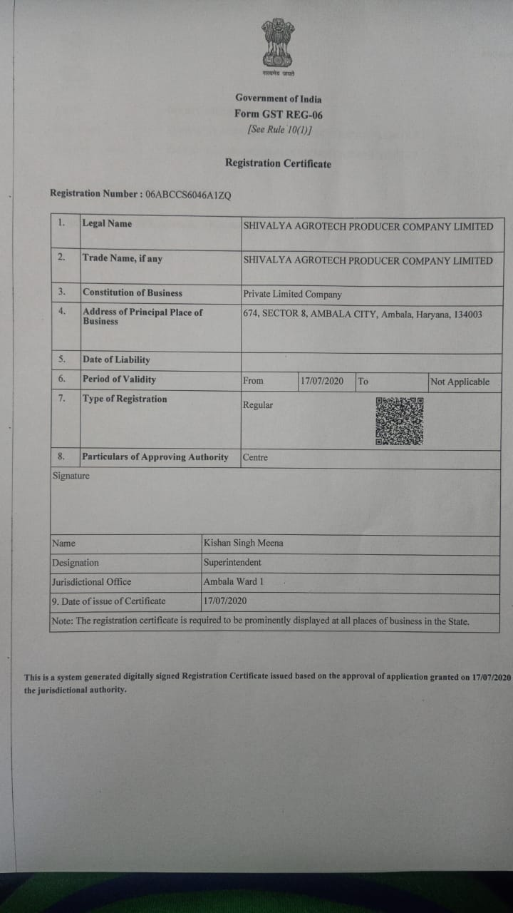

Consistent standards, batch after batch.
Mulching films made to last through the crop season.
Micron, width, length and weight are stated for every roll.
Regular GST registration, GSTIN 06ABCCS6046A1ZQ.
